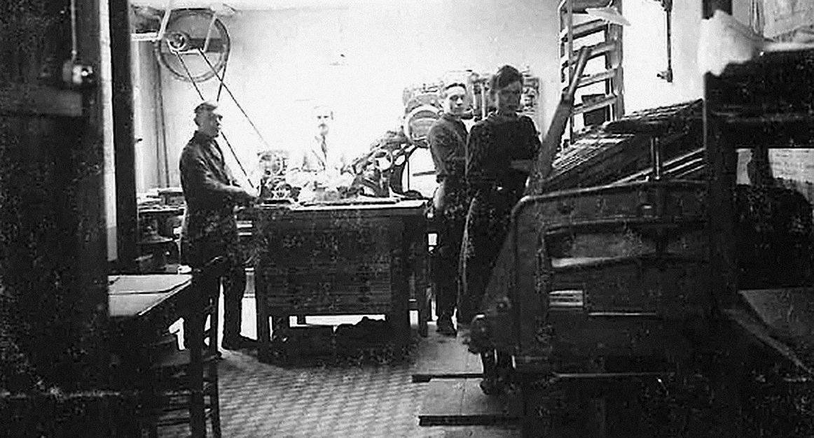
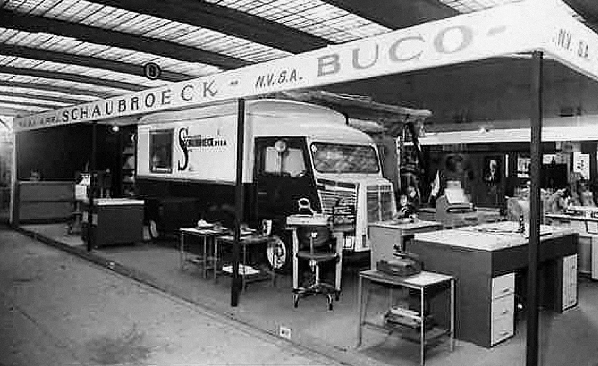
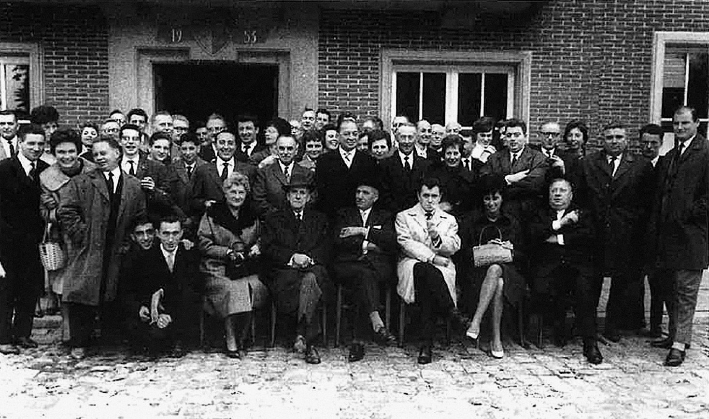

Our heritage — since 1911
Van drukkunst
tot vastgoed.
Een verhaal van generaties, ondernemerschap en visie.
Ons verhaal begint niet in vastgoed, maar ruim een eeuw geleden in de wereld van de drukkunst.
1911 · Nazareth
Toen en nu.
In 1911 richtte Gabriël Schaubroeck in Nazareth Drukkerij Schaubroeck op. Wat begon als een drukkerij voor lokale besturen, groeide doorheen de generaties uit tot een gevestigde naam in het Belgische ondernemerslandschap. Een familiebedrijf waar vakmanschap, ondernemingszin en langetermijndenken centraal stonden.

 ToenNu
ToenNuToen · Het vroege atelier
Sleep om te vergelijken
Nu · Sfeerbeeld
Sinds
Jaar ondernemerschap
Oost-Vlaanderen · België
Die geschiedenis leeft vandaag
verder in een nieuwe generatie.
Via zijn moeder, Isabelle Schaubroeck, is oprichter Clément Gryp nauw verbonden met dit familiale ondernemersverleden. De sector veranderde, maar de ambitie om iets waardevols op te bouwen bleef.
Waar eerdere generaties hun stempel drukten op papier, richt de volgende generatie zich op de gebouwde omgeving.
Tijdlijn
Meer dan honderd jaar
ondernemerschap.
1911
De oorsprong
Gabriël Schaubroeck richt in Nazareth zijn drukkerij op, als drukker van gelegenheidsdrukwerk.

Daarna
Drukwerk voor lokale besturen
Na enkele jaren levert de drukkerij ook administratief drukwerk voor gemeenten en lokale besturen. Lange tijd blijft ze een bestuursdrukkerij.

20e eeuw
Generaties ondernemerschap
De drukkerij ontwikkelt zich doorheen de generaties tot een gevestigde, polyvalente grafische onderneming.

2011
Honderd jaar
De groep viert honderd jaar ondernemerschap.

2019
Black Oak Capital BV
Clément Gryp richt Black Oak Capital BV op, zijn eigen, onafhankelijke onderneming in vastgoedontwikkeling en investeringen.

2022
Black Oak BV
Een afzonderlijke familiale patrimoniumvennootschap, los van Black Oak Capital BV.
Uit het archief
Beelden uit
de drukkerij.
Klik op een foto om te vergroten.
Een eigen hoofdstuk
Met Black Oak Capital schrijft Clément zijn eigen hoofdstuk. Als onafhankelijke vastgoedontwikkelaar en investeerder ligt de focus op residentiële ontwikkelingen en commercieel vastgoed, met aandacht voor kwaliteit, doordachte investeringen en duurzame waardecreatie.
Ook de familiale verbondenheid met vastgoed blijft bestaan via Black Oak BV, een afzonderlijke patrimoniumvennootschap waarin familieleden samen investeren.
Zo krijgt een ondernemingsgeschiedenis die meer dan honderd jaar geleden begon een nieuwe betekenis.
Andere tijden.
Andere sectoren.
Dezelfde ondernemersgeest.
Archieffoto's: familie Schaubroeck. Het beeld bij 'Nu' en de overige beelden zijn sfeerreferenties.